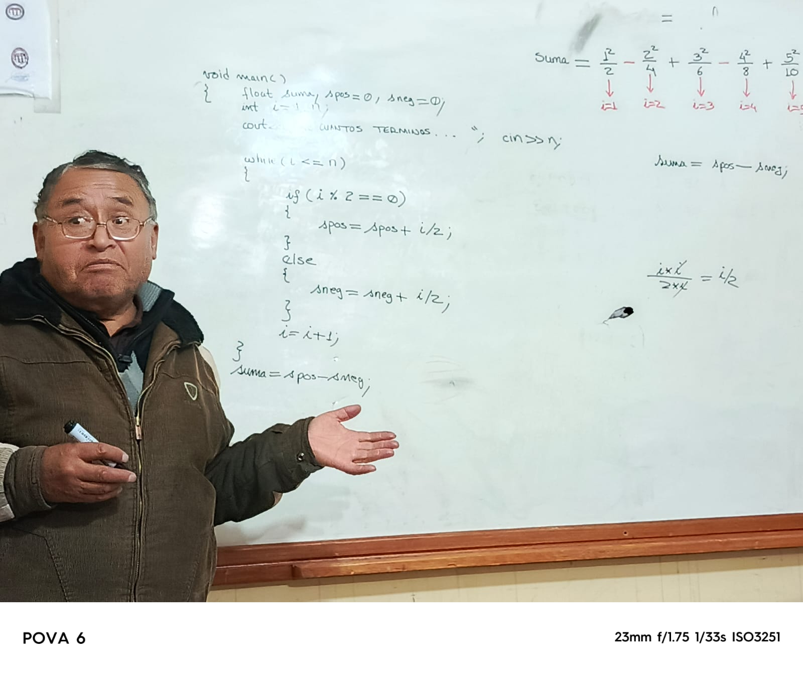
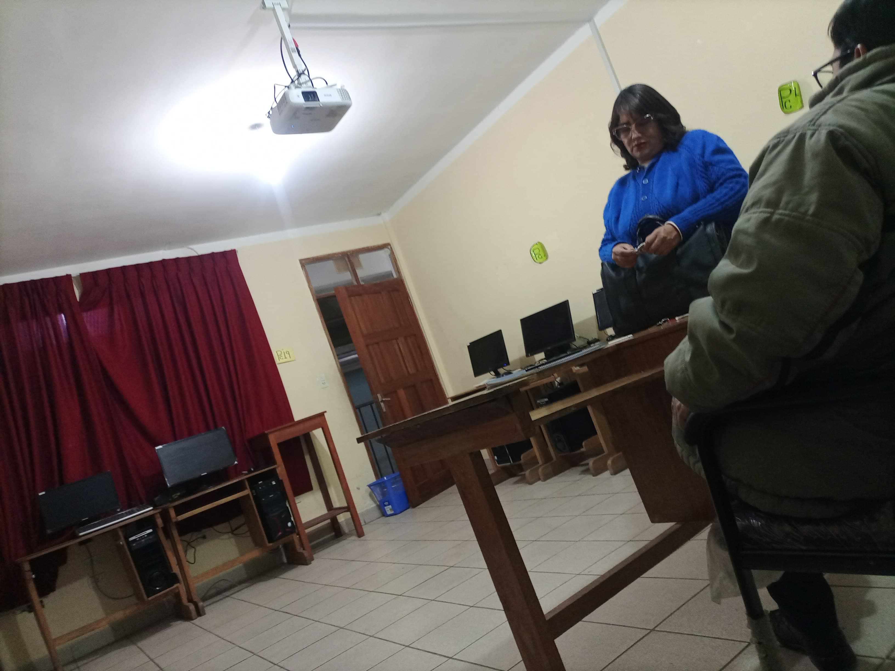

INSTITUTO TECNICO COMERCIAL FE Y ALEGRIA
ITEC
DOCENTES
 
Los docentes de sistemas informáticos desempeñan un papel crucial en el desarrollo de habilidades técnicas y analíticas de los estudiantes, preparándolos para un mercado laboral en constante evolución. Su impacto no se limita a la transmisión de conocimientos teóricos, sino que también radica en su capacidad para enseñar a resolver problemas reales mediante la aplicación práctica de tecnologías emergentes.
Un buen docente en esta área no solo domina conceptos como programación, redes, ciberseguridad o mantenimiento, sino que también es un guía que fomenta el pensamiento crítico, la creatividad y la adaptabilidad. En un mundo donde la tecnología avanza rápidamente, es esencial que los educadores de sistemas informáticos se mantengan actualizados y sean flexibles para adaptar sus métodos de enseñanza. Esto incluye integrar nuevas herramientas, metodologías activas como el aprendizaje basado en proyectos, y fomentar habilidades blandas como el trabajo en equipo y la comunicación.
Además, el rol de estos docentes es clave para cerrar la brecha tecnológica. Ellos pueden inspirar a las nuevas generaciones a participar en campos tecnológicos y contribuir a un desarrollo sostenible. En resumen, los docentes de sistemas informáticos no solo forman técnicos competentes, sino también profesionales éticos y responsables capaces de liderar la transformación digital.
volver